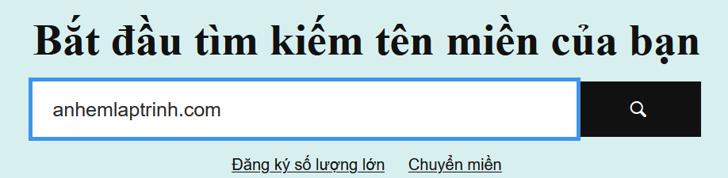
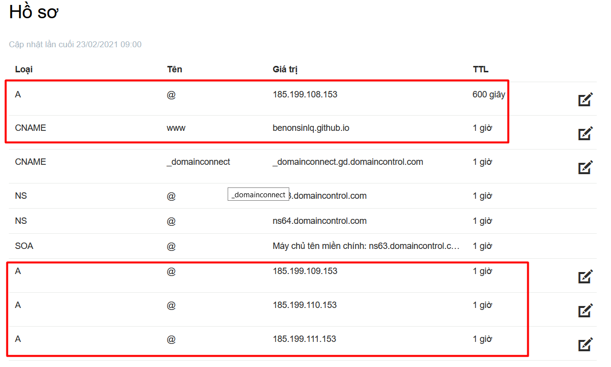
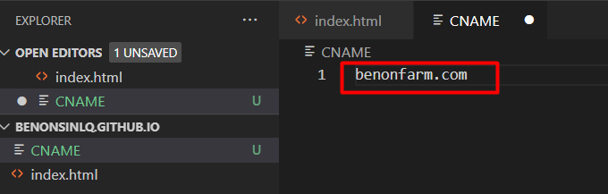
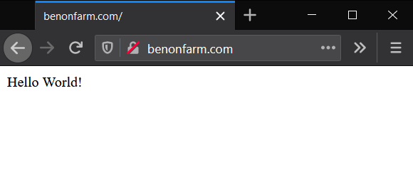

Mua tên miền và liên kết với GitHub Pages
Chào các bạn!
Hôm trước mình đã cùng trang GitHub để tạo web tĩnh miễn phí. Tuy nhiên nếu chưa có một tên miền thì cũng không hay ho lắm. Thử nghĩ xem giữa xyz.github.io và anhemlaptrinh.com thì rõ ràng một tên miền riêng là rất đáng để đầu tư. Dông dài như vậy là đủ rồi, bây giờ bắt tay vào làm thôi.
Bước 1: Tìm một nhà cung cấp tên miền. GoDaddy là một ví dụ.
Bước 2: Mua một tên miền, nhập tìm kiếm tên miền, chọn, trả $ và mua thôi. :D

Bước 3: Liên kết với GitHub Pages
Vào trình quản lý DNS của GoDaddy và bắt đầu cấu hình cho domain.
Dòng đầu tiên A Record trỏ tới 185.199.108.153 (máy chủ GitHub)
Dòng CNAME trỏ tới trang GitHub Pages của bạn
Thêm 3 dòng A Record trỏ tới các địa chỉ sau: 185.199.109.153, 185.199.110.153, 185.199.111.153 (đều là máy chủ GitHub)

Tới lúc này, nếu bạn gõ tên miền vào trình duyệt thì sẽ thấy như sau.

Bước 4: Cấu hình tại GitHub Pages
Vào Repository của GitHub Pages, thêm một file CNAME như sau:
Tên file: CNAME Nội dung: tên miền bạn mua ở bước 2
Commit và push file CNAME lên GitHub.

Bước 5: Kiểm tra kết quả
Vào trình duyệt và nhập tên miền mới mua, bạn sẽ thấy nội dung GitHub Pages hiện ra.

Bước 6: Vọc Github Pages.
Mục tiêu của Github Pages là để bạn có một nơi chia sẽ các project với cộng đồng, các nhân mình thấy nó rất tiện cho việc vọc/học front-end. Các bài tiếp theo chúng ta sẽ vọc xem có thể làm được gì với một web tĩnh miễn phí này.
Code thôi.